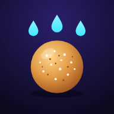

Brincadeiras para criança e família, sem cadastro e sem anúncio: histórias para dormir, dança e jogos em que se brinca com o corpo todo na frente da TV. Family games and stories, no sign-up, no ads.
Frutas, doces e personagens voam na TV e você corta, pega, chuta, pula e abaixa com o corpo. 1 ou 2 pessoas, boneco personalizável, ou no dedo no celular.
Slice, catch, kick, jump and duck with your body on the TV. Or by finger on the phone.
▶ Brincar / PlayO provador maluco da família: uma coroa, um bigode ou uma peruca desce sobre o bicho e você toca na hora certa. Quanto mais perto, mais pontos. UHUL!
The family's crazy fitting room: tap at the right moment, points for precision.
▶ Brincar / PlayA TV toca a música do YouTube e mostra quem está dançando, com neon, fogos e placar de energia. O celular filma e comanda.
Living Room Dance: YouTube on the TV, phone cameras live, energy score.
▶ Dançar / DanceCorrida de carrinho: desvie dos cones e da lama, pegue estrelas, turbo de arco-íris e rampas, passando pela praia, floresta, doces, neve e cidade neon. 1 ou 2 jogadores na mesma tela.
Kart race: dodge, grab stars, rainbow turbo and ramps across 4 worlds. 1 or 2 players.
▶ Correr / RaceMaquiagem, roupas, joias e muito brilho: monte a personagem, faça a maquiagem com o pincel, vista roupas e acessórios, cumpra desafios e desfile com confete. Brinque na TV com o celular de controle e música do YouTube ou do Spotify.
Makeup, outfits and sparkle: style your character, take challenges and walk the runway.
▶ Brilhar / SparkleDesenhar, livro de colorir e pintar por números, com pincéis que mexem, adesivos animados, paisagens e música. Desenhe com a mão na frente da câmera ou na TV com o celular de controle.
Draw, color and paint by numbers with live brushes, animated stickers and your hand in the camera.
▶ Desenhar / DrawHistórias para dormir: um acervo para ler e ouvir, e a criação de histórias novas com os nomes da sua família.
Storyteller: bedtime stories to read, listen to and create.
▶ Ouvir / ListenMais jogos de movimento, música e imaginação estão a caminho.
More games on the way.
🚧 Em breve / Soon